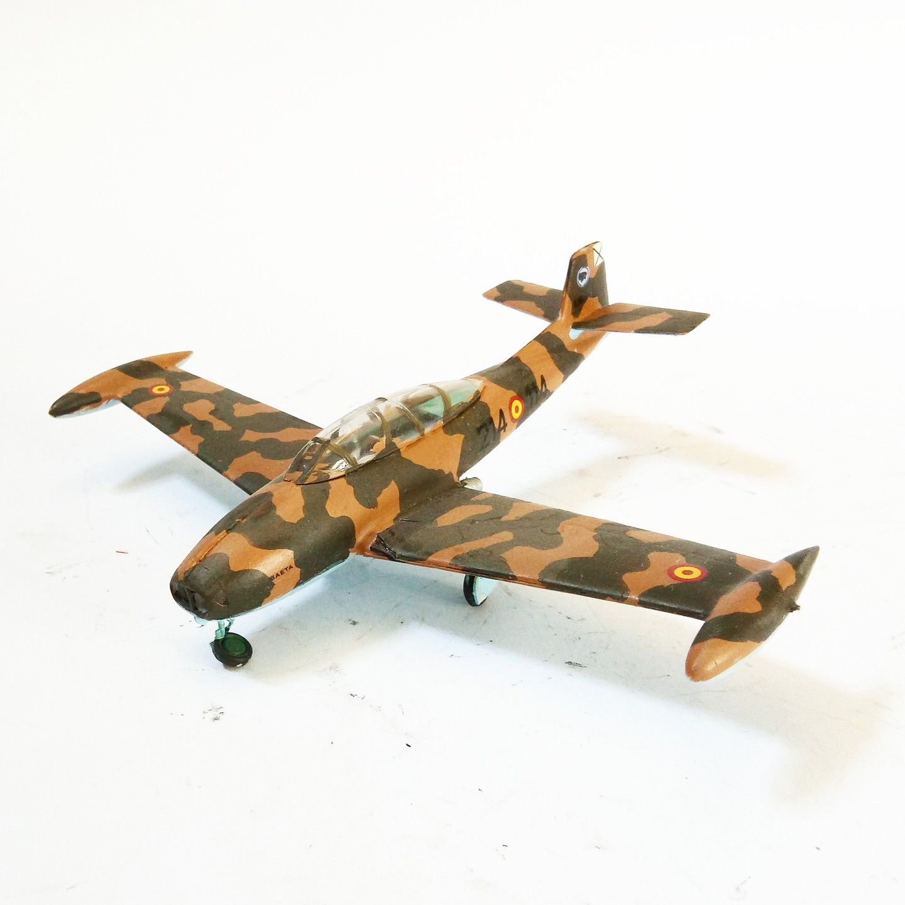

Aerei · scale model archive
Hispano Aviacion HA220 Super Saeta
Hispano Aviacion HA220 Super Saeta — Kit: Special Hobby, Scale: 1/72. Designed pst war in cooperation with Willy Messerschmitt #1/72 #Special Hobby

Photo gallery
English description
Designed pst war in cooperation with Willy Messerschmitt
#1/72 #Special Hobby
Descrizione italiana
Designed pst war in cooperation con Willy Messerschmitt.
#1/72 Hobby.